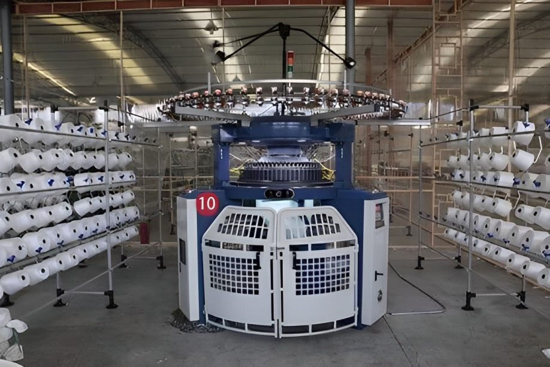
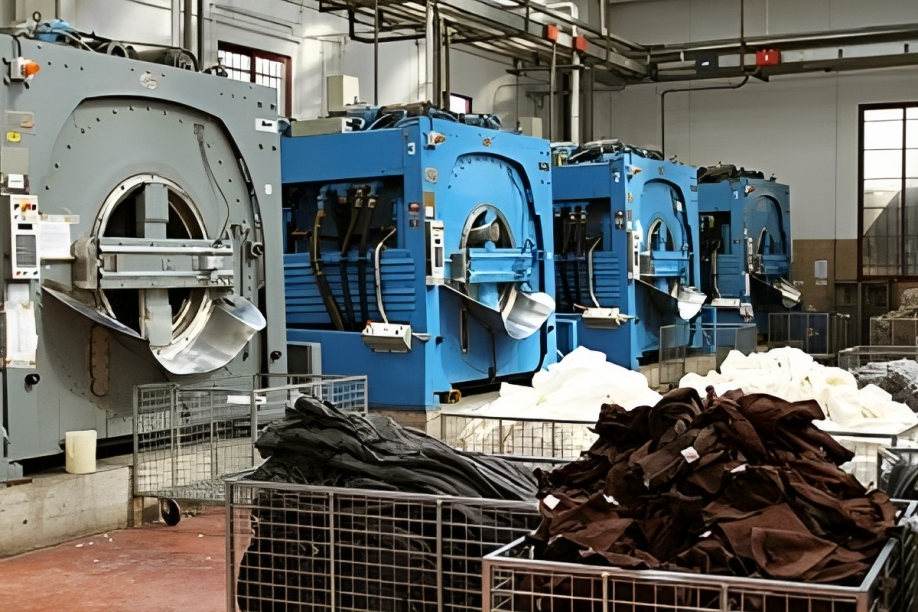
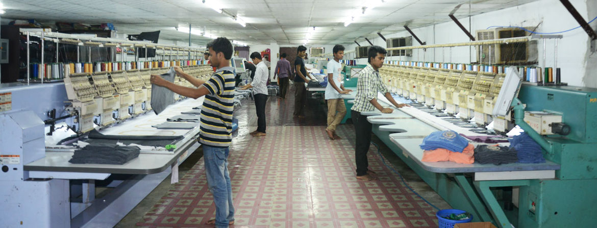
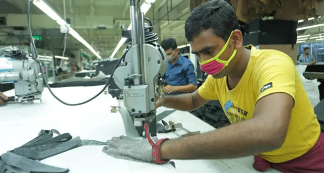
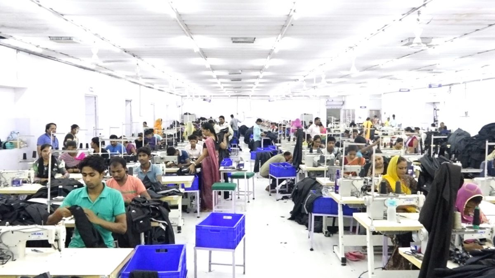
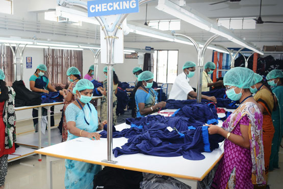
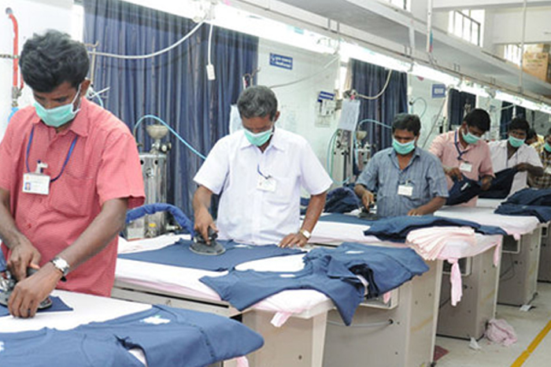
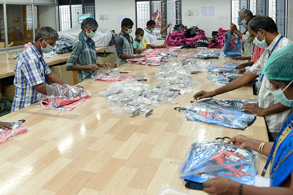

KNITTING
We are out source in knitting produces grey fabric thru various knit technique in diameter ranging from 14' to 36'.the knitting unit has the capability to produce 300000 meters of knitted fabrics per year.

DYEING
Soft flow machines are used for the bleaching and color dyeing of yarn and knitted fabric. Eco-Friendly Dyes and GOTS approved chemicals are used. A balloon – padding machine is used to extract water. We are out source in dyeing.

PRINTING
This division takes care of the requirements of printing on knitted fabric as well as garments. The printing can be done in a number of colors, qualities and various effects as per buyer’s specifications.Standard dyes are used in printing.

EMBROIDERY
Top most priority is given to Embroidery. Custom Embroidery T-Shirts are the most popular products. We specialize in LOGO Embroidery, Embroidery in Fleece and Jackets. We have our own Embroidery unit, which we use latest machines like for quality Embroidery.

CUTTING
Cutting is the main phase in garment making. A Garment can’t be made without cutting. In our firm cutting is done by the persons who are perfectly skilled and experience. We have modern hand cutter and pattern cutting machines.

STITCHING
For stitching of garments we have 200 machines. The over lock and flat lock machines are from Pegasus-Japan and lock stitch are from Juki-Japan. All the machines are fixed with auto thread trimming and dust collection.

CHECKING
Every garment is subjected thru a initial check in the production on to the line and only then passed on to the separate checking division for a final checking.

IRONING
As this is the final figuring of a Garment, we take maximum care. We have a experienced team of checkers who under go checking in three stages. Initial / middle & Final. There are three filters to filter the garment before it reaches the Ironing Division.

PACKING
We buy our Packing Materials from leading suppliers and professional providers. We use only Oeko Tex certified labels produced from fully computerized labeling machines.